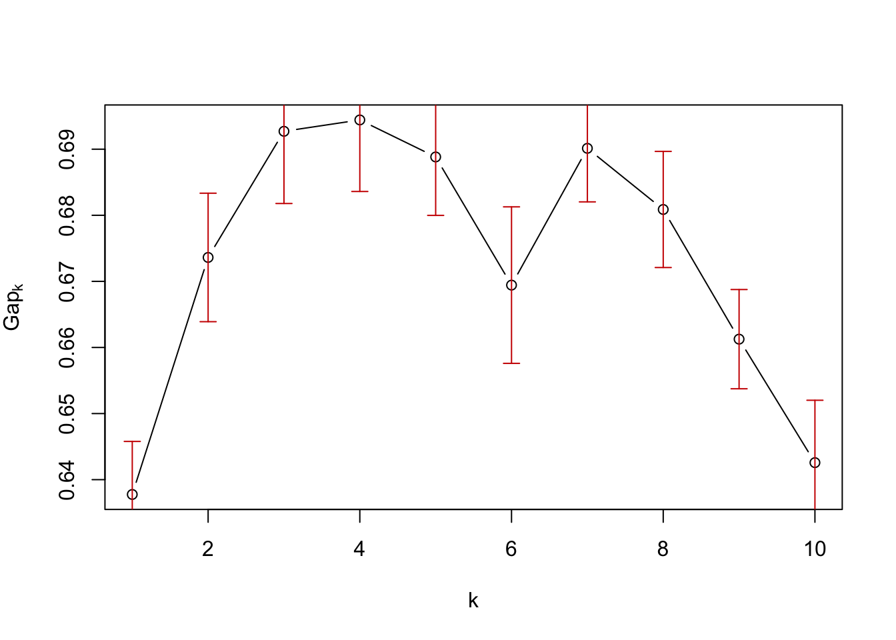

Chapter 22 Linear models
Linear models is a general term for models with a single univariate response (dependent variable - \(y\) in the formula below), which we want to describe using one or several predictors (independent variables - \(x\) in the formula below).
\[ y = a + b \cdot x + e \] Here the informative parameter is the slope (\(b\)) which indicates the relation between \(x\) and \(y\). (\(e\) is the missfit / residuals of the model).
We use tidyverse coding as this makes life much easier. As a tidyverse add on, we use broom for the linear models, broom.mixed and lme4 for the linear mixed models.
library(ggplot2) # lets plot dadta
library(tidyverse)
library(broom)
library(broom.mixed)
library(lme4)
library(ggpubr) # lets add stats to the plots
library(knitr) # lets make nice tablesThe data is already imported, and formated (see Getting_data_in.pdf for details). We simply load this file.
library(data4consumerscience)
data(pasta)22.1 Example
As response variable, the amount of Consumption of Pasta with mushrooms and use the likert scale I like the taste of pasta with mushrooms! as predictor. We use ONLY Day 1 results.
First a plot:
pasta %>%
filter(str_detect(StationName,'mush')) %>%
filter(Day==1) %>%
ggplot(data = ., aes(I_like_taste_of_pasta_with_mushrooms,Consumption)) +
geom_point() +
stat_smooth(method = lm, se = F)## `geom_smooth()` using formula 'y ~ x'
It seems as there is something. So lets build a linear model on this
# subset the data
x <- pasta %>%
filter(str_detect(StationName,'mush')) %>%
filter(Day==1)
mdl <- lm(data = x, Consumption~I_like_taste_of_pasta_with_mushrooms)
mdl ##
## Call:
## lm(formula = Consumption ~ I_like_taste_of_pasta_with_mushrooms,
## data = x)
##
## Coefficients:
## (Intercept)
## 89.00
## I_like_taste_of_pasta_with_mushroomsAgree
## 6.60
## I_like_taste_of_pasta_with_mushroomsStrongly agree
## 82.25summary(mdl)##
## Call:
## lm(formula = Consumption ~ I_like_taste_of_pasta_with_mushrooms,
## data = x)
##
## Residuals:
## Min 1Q Median 3Q Max
## -119.25 -49.60 -3.00 35.58 164.75
##
## Coefficients:
## Estimate Std. Error t value
## (Intercept) 89.00 60.43 1.473
## I_like_taste_of_pasta_with_mushroomsAgree 6.60 71.50 0.092
## I_like_taste_of_pasta_with_mushroomsStrongly agree 82.25 67.56 1.217
## Pr(>|t|)
## (Intercept) 0.167
## I_like_taste_of_pasta_with_mushroomsAgree 0.928
## I_like_taste_of_pasta_with_mushroomsStrongly agree 0.247
##
## Residual standard error: 85.46 on 12 degrees of freedom
## Multiple R-squared: 0.2043, Adjusted R-squared: 0.07173
## F-statistic: 1.541 on 2 and 12 DF, p-value: 0.2537The the slope indicates that by increasing liking by one unit the consumption increase is \(50.2 \pm 30.4\), however, this apparent effect is not statistically significant (\(p = 0.12\)).
22.2 Run a bunch of models at once
We want to model consumption of both pasta with mushrooms andd legumes, and look at all the likert scales questions as predictors. Further we want to do this for both days.
First we create a new long format data frame
pastalong <- pasta %>%
gather(question,answ,I_like_taste_of_pasta_with_legumes:Pasta_with_mushrooms_is_visually_appealing) %>%
mutate(answnum = factor(answ,labels = c('Disagree','More or less disagree','Neither agree nor disagree','More or less agree','Agree','Strongly agree')) %>% as.numeric())## Warning: attributes are not identical across measure variables;
## they will be dropped22.2.1 A plot
pastalong %>%
filter(!is.na(StationName )) %>%
mutate(question2 = question %>% substr(1,34)) %>% # The label is to long, so lets just represent the first 30 letters.
ggplot(data = ., aes(answnum,Consumption, color = factor(Day))) +
geom_point() +
stat_smooth(se = F, method = lm) +
stat_cor() +
facet_grid(question2 ~ StationName) +
theme_bw() + theme(legend.position = 'bottom')## `geom_smooth()` using formula 'y ~ x'
This we similary can run as several linear models.
tb <- pastalong %>%
filter(!is.na(StationName )) %>%
group_by(StationName,question,Day) %>%
do(lm(data = ., Consumption~answnum) %>% tidy(conf.int = T))
tb %>%
filter(term=='answnum') %>%
dplyr::select(-statistic) %>%
kable(x = .,caption = 'All linear models', digits = 2, format = 'simple')| StationName | question | Day | term | estimate | std.error | p.value | conf.low | conf.high |
|---|---|---|---|---|---|---|---|---|
| Pasta with legumes | I_like_taste_of_pasta_with_legumes | 1 | answnum | 8.51 | 10.65 | 0.44 | -14.49 | 31.51 |
| Pasta with legumes | I_like_taste_of_pasta_with_legumes | 2 | answnum | -4.24 | 13.27 | 0.75 | -32.91 | 24.42 |
| Pasta with legumes | I_like_taste_of_pasta_with_mushrooms | 1 | answnum | 1.93 | 9.47 | 0.84 | -18.53 | 22.39 |
| Pasta with legumes | I_like_taste_of_pasta_with_mushrooms | 2 | answnum | 15.10 | 11.16 | 0.20 | -9.00 | 39.21 |
| Pasta with legumes | Pasta_with_legumes_is_visually_appealing | 1 | answnum | 23.36 | 7.75 | 0.01 | 6.61 | 40.10 |
| Pasta with legumes | Pasta_with_legumes_is_visually_appealing | 2 | answnum | 8.50 | 16.06 | 0.61 | -26.19 | 43.19 |
| Pasta with legumes | Pasta_with_mushrooms_is_visually_appealing | 1 | answnum | 11.75 | 17.95 | 0.52 | -27.04 | 50.54 |
| Pasta with legumes | Pasta_with_mushrooms_is_visually_appealing | 2 | answnum | 13.17 | 12.21 | 0.30 | -13.21 | 39.55 |
| Pasta with mushroom | I_like_taste_of_pasta_with_legumes | 1 | answnum | -10.34 | 11.56 | 0.39 | -35.32 | 14.63 |
| Pasta with mushroom | I_like_taste_of_pasta_with_legumes | 2 | answnum | 4.33 | 9.07 | 0.64 | -15.27 | 23.93 |
| Pasta with mushroom | I_like_taste_of_pasta_with_mushrooms | 1 | answnum | 16.00 | 9.36 | 0.11 | -4.22 | 36.23 |
| Pasta with mushroom | I_like_taste_of_pasta_with_mushrooms | 2 | answnum | 3.75 | 8.12 | 0.65 | -13.80 | 21.29 |
| Pasta with mushroom | Pasta_with_legumes_is_visually_appealing | 1 | answnum | 8.89 | 10.75 | 0.42 | -14.35 | 32.12 |
| Pasta with mushroom | Pasta_with_legumes_is_visually_appealing | 2 | answnum | -13.86 | 10.47 | 0.21 | -36.48 | 8.75 |
| Pasta with mushroom | Pasta_with_mushrooms_is_visually_appealing | 1 | answnum | 16.81 | 19.38 | 0.40 | -25.05 | 58.67 |
| Pasta with mushroom | Pasta_with_mushrooms_is_visually_appealing | 2 | answnum | -10.72 | 8.24 | 0.22 | -28.52 | 7.08 |
| .. A plot of these res | ults for a quick interpretation. |
tb %>%
filter(term=='answnum') %>%
ggplot(data = ., aes(question,estimate,ymin = conf.low, ymax = conf.high, color = factor(Day))) +
geom_errorbar(width = 0.1, position = position_dodge()) +geom_point()+
geom_hline(yintercept = 0) +
coord_flip() +facet_grid(~StationName) +
theme(legend.position = 'bottom')
Seems as some of the legume consumptions there is a significant association with likert scales. Not as strong for consumption of mushrooms.